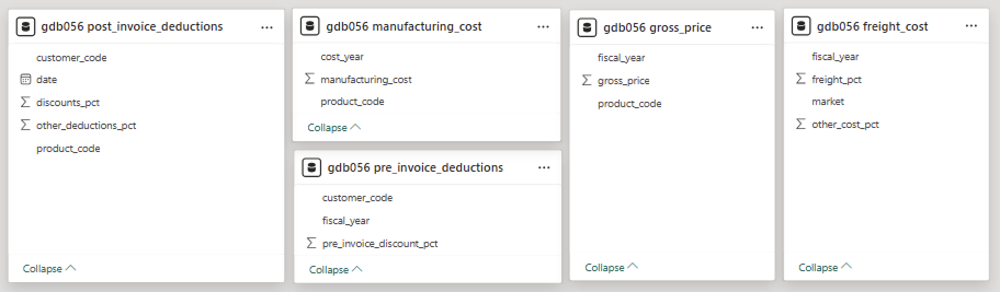

Developed an interactive Power BI dashboard integrating MySQL & Excel to provide 360-degree business insights. Designed 4 key analytical views covering P&L analysis, revenue trends, gross margin, and financial KPIs. Implemented ETL processes for data transformation and built 10+ KPIs to track profitability, sales performance, and business health.
AtliQ Hardware is one of the fastest-growing companies, selling products such as PCs, keyboards, and other hardware components globally.
However, when the company attempted to expand its business into the Latin American market, it suffered significant losses.
Upon investigation, it was discovered that the decision was made based on intuition and survey responses rather than relying on historical data and concrete numbers.
AtliQ Hardware now aims to develop a comprehensive dashboard that consolidates data from finance, sales, marketing, and supply chain operations. The objective is to enable data-driven decision-making to avoid similar setbacks in the future.
They require 5 consecutive dashboards:
Below images includes all the table names along with their column names. This is all the data I had when I started the project.
There are 2 databases:
gdb041: for Sales and Forecasting (Business Performance)
gdb056: for Cost and Pricing (Profitability Analytics)
Database: gdb041
Database: gdb056
Start date(fact_sales table): Sep 2017
End date(fact_forecast table): Dec 2022
Fiscal Year Cycle: Sep to Aug
= {Number.From(#date(2017,9,1))..Number.From(#date(2022,12,31))}
i.e. Fiscal year 2018 = Sep(9) 2017 to Aug(8) 2018
= {Number.From(#date(2017,9,1))..Number.From(#date(2022,12,31))}
For future analysis I will require a table with actual AND forecast data.
I will combine fact_sales table with fact_forecast table. We can see that both the tables have same column names so It will be easy append the tables.
We have to grab all the past months data from fact_sales table, and then for coming months we will require data from fact_forecast table. Review below screenshot for more clarification.
Reference table of fact_sales: fact_actuals_forecast
Reference Table of fact_forecast: remaining_months.
we don't need whole forecast table, we need data from last sale date.
LastSaleMonth = List.Month(#"gdb041 fact_sale_monthly"[date])
remaining_months = Table.SelectRows(source, each([date] > LastSaleMonth))
Append tables: fact_actuals_forecast | remaining_months
Below Screenshot includes all the calculation for P&L Statement:
Merged tables in Power Query using primary, foreign, or composite keys based on the relationship between datasets. For example:
gross_sale_amount = [gross_price]*[Qty]
*Due to the high volume of data in post-invoice deductions (millions of rows), DAX was used to efficiently after that, to aggregate and compute key financial metrics.
Creating a Date Table is a very important step, especially in professional reporting and Power BI dashboards.
Even Microsoft recommends this in official Power BI documentation.
Why creating a date table:
YTD: Year-to-Date (fact_sale table)
YTG: Year-to-Go (remaining_months table)
A composite key is a combination of two or more columns that together uniquely identify a row in a table (especially during joins or merges).
Before performing DAX calculations, it's essential to define relationships between tables — this process is known as data modeling.
Below Screenshot is consist of data model view:
The data model follows a Snowflake Schema, with multiple fact tables and normalized dimension tables connected through composite and direct relationships.
We will continue with post_invoice deduction, but with DAX columns.
post_invoice_deduction_amount =
var res =
CALCULATE(
MAX(post_invoice_deductions[discounts_pct]), RELATEDTABLE(post_invoice_deductions)
)
return res*fact_sales_actuals_estimates[net_invoice_sale_amt]
post_invoice_other_deduction_amount =
var res =
CALCULATE(
MAX(post_invoice_deductions[other_deductions_pct]), RELATEDTABLE(post_invoice_deductions)
)
return res*fact_sales_actuals_estimates[net_invoice_sale_amt]
Net Sale amount = NIS - all post invoice
net_sale_amt =
fact_sales_actuals_estimates[net_invoice_sale_amt]
-fact_sales_actuals_estimates[post_invoice_deduction_amount]
-fact_sales_actuals_estimates[post_invoice_other_deduction_amount]
Manufacturing Cost = Manufacturing Cost * Quantity
manufacturing_cost =
var res =
CALCULATE(
MAX(manufacturing_cost[manufacturing_cost]), RELATEDTABLE(manufacturing_cost)
)
return res*fact_sales_actuals_estimates[Qty]
Freight Cost = Freight Cost * net Sale amount
freight_cost =
var res =
CALCULATE(
MAX(freight_cost[freight_pct]), RELATEDTABLE(freight_cost)
)
return res*fact_sales_actuals_estimates[net_sale_amt]
other_cost =
var res =
CALCULATE(
MAX(freight_cost[other_cost_pct]), RELATEDTABLE(freight_cost)
)
return res*fact_sales_actuals_estimates[net_sale_amt]
COGS = Manufacturing Cost + Freight Cost + Other Cost
total_cogs_amount =
fact_sales_actuals_estimates[manufacturing_cost]
+fact_sales_actuals_estimates[freight_cost]
+fact_sales_actuals_estimates[other_cost]
COGS = Manufacturing Cost + Freight Cost + Other Cost
total_cogs_amount =
fact_sales_actuals_estimates[manufacturing_cost]
+fact_sales_actuals_estimates[freight_cost]
+fact_sales_actuals_estimates[other_cost]
Filter Context are what filters are currently active on your data when a DAX formula is being calculated.
Used CALCULATE function to change filter context.
To ensure data accuracy, I performed a manual validation step:
To enhance model performance and reduce size, I conducted targeted file optimization:
Result: Reduced the Power BI file size by ~70 MB, improving load time and responsiveness.
Built a flexible and finance-friendly Profit & Loss (P&L) statement in Power BI by defining a static structure and linking it with dynamic measures.
P & L Row Structure
P & L Values Measure
P & L Values =
var res= SWITCH(
TRUE(),
MAX('P & L Row'[Order]) = 1, [GS $]/1000000,
MAX('P & L Row'[Order]) = 2, [Pre Invoice Deduction]/1000000,
MAX('P & L Row'[Order]) = 3, [NIS $]/1000000,
MAX('P & L Row'[Order]) = 4, [Post Invoice Discount]/1000000,
MAX('P & L Row'[Order]) = 5, [Post Invoice Other Deductions]/1000000,
MAX('P & L Row'[Order]) = 6, [Total Post Invoice Deduction]/1000000,
MAX('P & L Row'[Order]) = 7, [NS $]/1000000,
MAX('P & L Row'[Order]) = 8, [Manufacturing Cost $]/1000000,
MAX('P & L Row'[Order]) = 9, [Freight Cost $]/1000000,
MAX('P & L Row'[Order]) = 10, [Other Cost $]/1000000,
MAX('P & L Row'[Order]) = 11, [Total COGS $]/1000000,
MAX('P & L Row'[Order]) = 12, [GM $]/1000000,
MAX('P & L Row'[Order]) = 13, [GM %]*100,
MAX('P & L Row'[Order]) = 14, [GM/unit],
MAX('P & L Row'[Order]) = 15, [Operational Expense $]/1000000,
MAX('P & L Row'[Order]) = 16, [NP $]/1000000,
MAX('P & L Row'[Order]) = 17, [NP %]*100
)
return
IF(HASONEVALUE('P & L Row'[Description]), res, [NS $]/1000000)
P & L Final Value =
SWITCH(
TRUE(),
SELECTEDVALUE(fiscal_year[fy_desc]) = MAX('P & L Columns'[Col Header]),
[P & L Values],
MAX('P & L Columns'[Col Header]) = "BM", [P & L BM],
MAX('P & L Columns'[Col Header]) = "Chg", [P & L Chg],
MAX('P & L Columns'[Col Header]) = "Chg %", [P & L Chg %]
)
P & L Column
P & L Columns =
var x = ALLNOBLANKROW(fiscal_year[fy_desc])
return
UNION(
ROW("Col Header", "BM"),
ROW("Col Header", "Chg"),
ROW("Col Header", "Chg %"),
x
)
No additional data transformation is required for the Sales view. We can directly build visuals using the existing model.
The Sales view will include the following components:
Target Gap Tolerance 2 = GENERATESERIES(0, 0.2, 0.01)
GM % Variance = [GM BM %] - [GM %]
GM % Filter =
IF(
[GM % Variance] >=
SELECTEDVALUE('Target Gap Tolerance 2'[Target Gap Tolerance]),
1,
0
)
Created new report, changed page settings and added necessary chart
for dynamic title:
Sales View Tooltip = "NS and GM % for " & SELECTEDVALUE(dim_customer[customer]) & " " & SELECTEDVALUE(dim_product[segment])
P & L LY = CALCULATE([P & L Values], SAMEPERIODLASTYEAR(dim_date[date]))
Created slicers to allow users to interactively filter and explore the data based on selected criteria.
Created another table by manually entering data, fiscal_year, fy_desc
Use fiscal_year for calculations and relationships (from date table)
Use fy_desc for display in visuals
Created a manual table for benchmark options like LY and Target:
This is a custom slicer. To make visuals respond dynamically, you need to create separate measures for each benchmark and then combine them using logic based on slicer selection.
NS LY $ =
CALCULATE(
[NS $],
SAMEPERIODLASTYEAR(dim_date[date])
)
NS Target $ =
VAR tgt = SUM(NsGmTarget[ns_target])
RETURN IF([product / customer filter check], BLANK(), tgt)
product / customer filter check =
IF(
ISCROSSFILTERED(dim_product[product]) ||
ISCROSSFILTERED(dim_customer[customer]),
TRUE(),
FALSE()
)
NS BM =
VAR tgt =
SWITCH(
TRUE(),
SELECTEDVALUE(benchmark[ID]) = 1, [NS LY $],
SELECTEDVALUE(benchmark[ID]) = 2, [NS Target $]
)
RETURN IF([product / customer filter check] = TRUE(), BLANK(), tgt)
The NS BM measure dynamically switches between benchmarks based on slicer selection. It ensures results are shown only at the appropriate level (e.g., total market), not when a specific product or customer is filtered.
BM Message = IF([NS BM] = BLANK() || [GM BM %] = BLANK() || [NP BM %] = BLANK(), "*BM Target(s) is not available for the selected filters", "")
Created a calculated column in the dim_date table called ytd_ytg. Since this column is directly related to the date dimension, we can use it in visuals and slicers without creating additional measures.
ytd_ytg =
var LastSalesDate = MAX(last_sale_date[last_sale_date])
var FYMonthNum = MONTH(DATE(YEAR(LastSalesDate), MONTH(LastSalesDate)+4, 1))
return
IF(dim_date[fy_month_num]> FYMonthNum, "YTG", "YTD")
Same as YTD/ YTG Slicer
quarter = "Q" & ROUNDUP( DIVIDE(dim_date[fy_month_num], 3, 0), 0)
Created a bookmark named Remove Filters with all filters cleared.
Added a button and set its Action property to trigger this bookmark, allowing users to reset all filters with a single click.
| Feature | Slicers | Filters |
|---|---|---|
| What it is | A visual element users interact with | A background-level configuration set in the Filter Pane |
| User Visibility | Visible on the report canvas | Visible only in the filter pane |
| Interactivity | User can select/deselect values | Usually fixed by report designer |
| Scope | Page-level (affects visuals on that page) | Visual-level, Page-level, or Report-level |
| Common Types | Dropdown, Checkbox, Range, Relative Date | Visual Filter, Page Filter, Report Filter, Top N, Drillthrough |
| Use Case | Let users explore data (e.g., select year, category) | Restrict or predefine the data shown in visuals |
| Best For | User control and interaction | Applying rules and hiding filter logic |